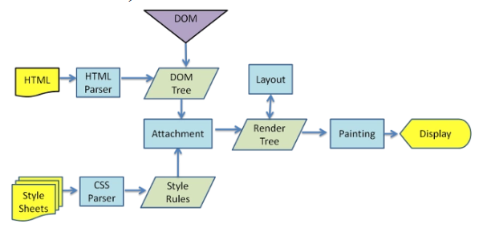
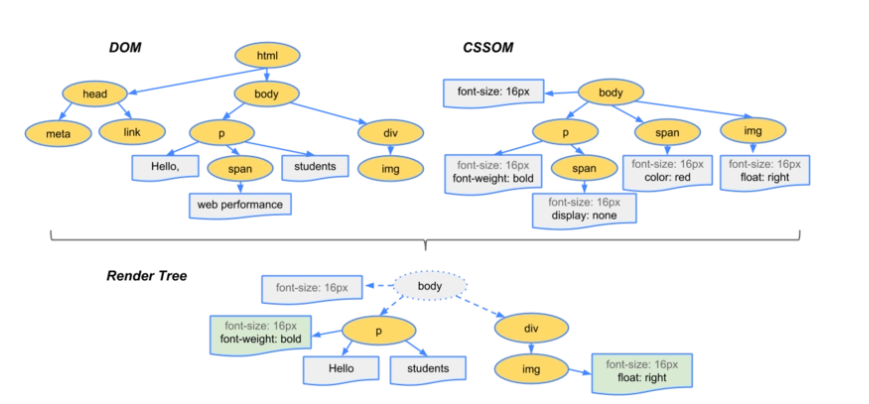

浏览器的渲染过程
*面试题：在浏览器地址栏里输入一个URL,到这个页面呈现出来，中间会发生什么？
目前市面上常见的浏览器内核可以分为这四种：Trident（IE）、Gecko（火狐）、Blink（Chrome、Opera）、Webkit（Safari）。这里面大家最耳熟能详的可能就是 Webkit 内核了，Webkit 内核是当下浏览器世界真正的霸主。
本文我们就以 Webkit 为例，对现代浏览器的渲染过程进行一个深度的剖析。
1. 页面加载的过程
首先需要找到这个URL域名的服务器IP
- 寻找缓存， 查看缓存中是否有记录（浏览器缓存 -> 系统缓存 -> 路由器缓存 ），缓存中没则去查找系统的hosts文件记录，如果再没有就去查询DNS服务器。
- 浏览器会根据DNS服务器得到域名的IP地址
- 根据这个IP 以及相应的端口号 构建一个HTTP请求，并将这个HTTP请求封装在一个TCP包中，发送给服务器（依次经过传输层，网络层，数据链路层，物理层，服务器）
- 服务器收到这个包并且解析这个http请求返回相应的HTML给浏览器
其实就是一堆 HMTL 格式的字符串，因为只有 HTML 格式浏览器才能正确解析，这是 W3C 标准的要求。接下来就是浏览器的渲染过程。
2. 浏览器的渲染过程

1） 浏览器会解析三个东西
- HTML/SVG/XHML，HTML字符串描述了一个页面的结构，浏览器会把HTML结构字符串解析转换DOM树形结构（DOM的构建）（在dom树的构建过程中如果遇到JS脚本和外部JS连接，则会停止构建DOM树来执行和下载相应的代码，造成阻塞，后面会说到）。
- CSS，解析CSS产生CSS rule tree，和他DOM树的结构比较像
- JS脚本，等到JS脚本文件加载完成之后，通过DOM API和CSSOM API来操作DOM tree和CSS rule tree
2）解析完成，浏览器引擎会通过DOM tree和css Rule Tree来构造Rendering Tree。
- Rendering Tree 渲染树并不等同于DOM树，渲染树只会包括需要显示的节点和这些节点的样式信息 （这里主要做的是排除非视觉节点，比如script，meta标签和排除display为none的节点）
- CSS的rule tree主要是为了完成匹配并且把CSS rule附加上Rendering tree上的每一个Element（也就是每一个Frame）
- 然后计算每个Frame的位置，得到节点的几何信息（位置，大小），这个又叫做回流（layout）
- 根据渲染树以及回流得到的几何信息，得到节点的绝对像素，这个过程叫做重绘（painting）
- display:将像素发送给GPU，展示在页面上。（这一步其实还有很多内容，比如会在GPU将多个合成层合并为同一个层，并展示在页面中。而css3硬件加速的原理则是新建合成层
3）最后通过调用操作系统Native GUI的api绘制
接下来叙述一些详细步骤
构建DOM树
浏览器会遵守一套步骤将HTML 文件转换为 DOM 树。宏观上，可以分为几个步骤：
- 浏览器从磁盘或网络读取HTML的原始字节，并且根据文件的指定编码（例：UTF-8）来将他们转换成字符串。（网络中传输的内容其实都是0 1这些字节数据。当浏览器收到这些字节数据以后，会将他们转成字符串，也就是我们写的代码）
- 将字符串转换成TOKEN，例如：
< html >,< body >等。Token中会自动标识出当前Token是“开始标签”还是“结束标签”或者是“文本”等信息。 - 生成节点对象并且构建DOM。（ 构建DOM的过程中，不是等所有Token都转换完成后再去生成节点对象，而是一边生成Token一边消耗Token来生成节点对象。换句话说，每个Token被生成后，会立刻消耗这个Token创建出节点对象。注意：带有结束标签标识的Token不会创建节点对象。 ）
构建CSSOM
DOM会捕获页面的内容，但浏览器还需要知道页面如何展示，所以需要构建CSSOM。
构建CSSOM的过程与构建DOM的过程非常相似，当浏览器接收到一段CSS，浏览器首先要做的是识别出Token，然后构建节点并生成CSSOM。
在这一过程中，浏览器会确定下每一个节点的样式到底是什么，并且这一过程其实是很消耗资源的。因为样式你可以自行设置给某个节点，也可以通过继承获得。在这一过程中，浏览器得递归 CSSOM 树，然后确定具体的元素到底是什么样式。
注意：CSS匹配HTML元素是一个相当复杂和有性能问题的事情。所以，DOM树要小，CSS尽量用id和class，千万不要过渡层叠下去。
构建渲染树
当我们生成 DOM 树和 CSSOM 树以后，就需要将这两棵树组合为渲染树。

在这一过程中，不是简单的将两者合并就行了。为了构建渲染树，浏览器主要完成了以下工作：
- 从DOM树的根节点开始遍历每个可见节点。
- 对于每个可见的节点，找到CSSOM树中对应的规则，并应用它们。
- 根据每个可见节点以及其对应的样式，组合生成渲染树。
第一步中，既然说到了要遍历可见的节点，那么我们得先知道，什么节点是不可见的。不可见的节点包括：
- 一些不会渲染输出的节点，比如script、meta、link等。
- 一些通过css进行隐藏的节点。比如display:none。注意，利用visibility和opacity隐藏的节点，还是会显示在渲染树上的。只有display:none的节点才不会显示在渲染树上。
注意：渲染树只包含可见的节点
回流和重绘
在另一篇文章（包含了渲染性能的优化策略等）
一些疑问
渲染过程中碰到JS文件应该如何处理？
渲染过程中如果遇到了